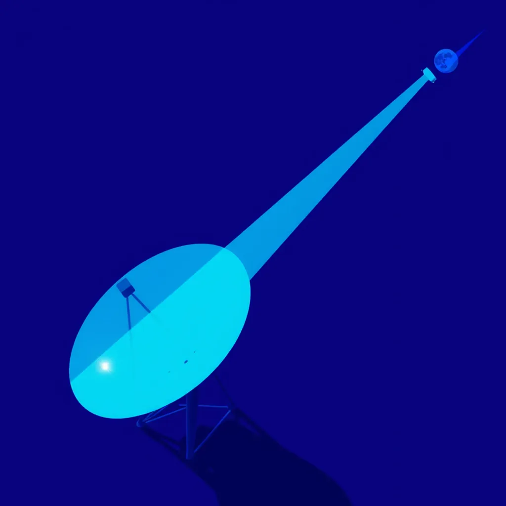

First Light ·
a radio key tapped, the signal reaching the speaker across the room, a great dish throwing the signal at the moon and the echo reaching back
The dial clicks hard against the wooden rim. Static fills the gap between your hands and the glass, then the voice cuts clean through the fog of dawn: a man reading news across three rooms of dust. The antenna on the porch leans into the air, reaching past the fence where grass drinks the last gray light, pushing out until the hill splits under wind.
Beyond that ridge, a silver cup spins on its pedestal, catching the first gold finger of sun on its rim. It throws the wave up through the thinning cold, hitting the silent face and waiting for the turn. The return stroke climbs down, passing over valleys deep, filling every gap with a hum you feel in the teeth.
Back at the bench, the speaker crackles once more. A single static pop settles into the warm wood grain, leaving the brass knob glowing slightly bright as if it touched fire, and now the needle vibrates against its post, pushing up forever through the quiet light.
How this piece was made
- 01Poem written byQwen3.5 9B recorded
Local model on one RTX 3070 Ti. It also critiques its own drafts and rewrites up to five times.
- 02Image prompt written byQwen3 8B from pipeline history
Local model. It reads the poem and writes the picture brief.
- 03Image rendered byFLUX.1 [schnell] from pipeline history
Local diffusion model on the same GPU. Several candidates per poem.
- 04Image chosen byClaude Fable 5.1 from pipeline history
Claude, running as the corporation's blind art-critic. It scores every candidate and never writes a prompt.
- Poem drafts
- 7 of 7
- Poem self-score
- 6/10
- Image candidates
- 2
- Judge’s score
- 5/10
- Selection
- Highest-scoring on-subject candidate (did not clear the judge’s bar outright)